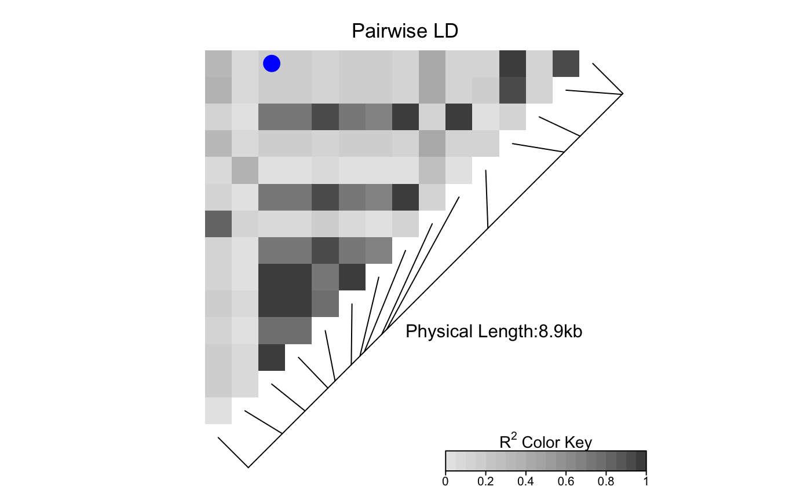

LDheatmap.marks.RdThe function LDheatmap.marks() is used to plot
a symbol in the centers of cells representing the
pairwise linkage disequilibria of specified pairs of SNPs.
LDheatmap.marks(LDheatmap, i, j = NULL, pch = 20, gp=gpar(...), ...)
| LDheatmap | An object of class |
|---|---|
| i | A vector of indices of the first set of SNPs. |
| j | A vector of indices of the second set of SNPs. |
| pch | Either an integer value or a single character specifying
the symbol to be plotted. See |
| gp | Graphical parameters; See |
| ... | Graphical parameter settings to be passed on to the |
The vector of x coordinate(s) of the plotted symbol(s).
The vector of y coordinate(s) of the plotted symbol(s).
The lengths of the vectors i and j must be the same and
greater than or equal to 1.
If the lengths are greater than 1, the function plots the specified
symbol in the centers of the (i\(\mbox{\textasciicircum}\)k,
j\(\mbox{\textasciicircum}\)k)-th cells (for k=1,...K; K =
length of the vectors i and j), where
i\(\mbox{\textasciicircum}\)k and
j\(\mbox{\textasciicircum}\)k are
the k-th elements of vectors i and j, respectively.
For example, if i=c(1,2) and j=c(3,5), LDheatmap()
plots a symbol in the centers of the cells representing pairwise
linkage disequilibria between the first and third SNPs and between the
second and fifth SNPs in the genome of interest. Note that the order
of the sets of indices does not matter; for example,
LDheatmap.marks(LDheatmap, i=c(1,2), j=c(3,5)) is equivalent
to LDheatmap.marks(LDheatmap, i=c(3,5), j=c(1,2)).
By default, LDheatmap.marks() finds the viewport to draw on from
the LDheatmap object passed to it as an argument.
However, if LDheatmap() was called with the option pop=TRUE,
the resulting LDheatmap object is not assigned a
viewport. In this case, LDheatmap.marks() assumes
the user wishes to highlight in the current viewport.
Therefore, if LDheatmap()
has been called with the option pop=TRUE,
the user must navigate to the correct viewport
before calling LDheatmap.marks().
LDheatmap.marks(tt, 15, 3, cex=1.6, col="blue")